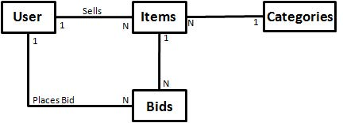
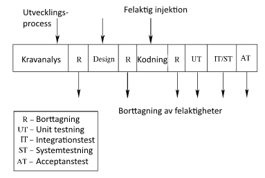
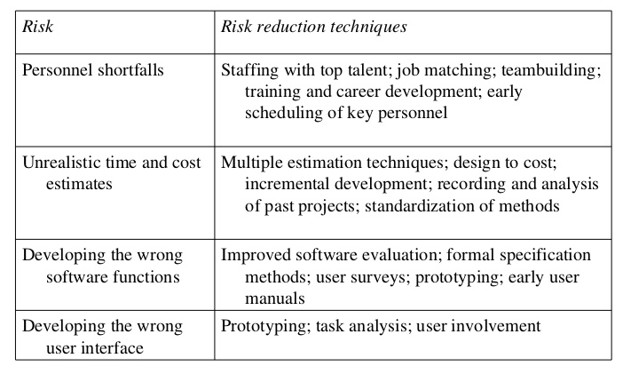

Ingenjörsprocessen Metodik - Sammanfattning
Bok: En koncist introduktion till programvaruteknik, Jalote
IEEE, Institute of Electical and Electronics Engineers, definierar ett krav som "Ett villkor på en funktion behövt av (1) en användare för att lösa ett problem eller uppfylla ett mål, (2) ett system för att tillfredsställa ett kontrakt, standard, specifikation, eller annan typ av formellt föreläggande dokument.
En Software Requirements Specification (SRS) används då man specificerar vad kraven är exakt, men inte hur.
En SRS …
…bildar grunden av överensstämmelse mellan klienten och leverantören (utvecklaren) på var produkten ska göra.
…förser en referens till bekräftelse på den slutgiltiga produkten.
En SRS av högkvalitet …
…är grundläggande för högkvalitets programvara.
…minskar utvecklingskostnaden.
Utgår från ett ”problempåstående”, med syfte att förstå vad programvaran ska erbjuda.
Förståelsen som erhålls i problemanalysen dokumenteras noggrant.
Säkerställa att kraven i SRS verkligen är uppfyllda.
Korrekt i varje krav, som representerar något i slutsystemet.
Fullständig i varje krav som programvaran ska göra.
Otvetydig om och endast om varje krav har en och enbart en tolkning.
Kontrollerbar om det existerar någon kostnadspåverkande process som kan verifieras.
Konsekvens om det inte finns något krav som krockar med ett annat.
Rangordnade efter relevans och/eller stabilitet
som förväntas av systemet, relationen mellan input och output.
specificerar systemets begränsningar, de statiska och dynamiska. Statiska – innehåller krav på antal terminaler, simultana användare, filer och storlek som ska stödjas. Dynamiska – innehåller begränsningar under körtid, ex responstid.
syftar på resursbegränsningar, operativsystem, tillförlitlighet och säkerhetsbegränsningar. Standarder följs – kan inkludera rapportformat och kontoprocedurer. Hårdvara begränsningar – kan inkludera vilken typ av maskiner, operativsystem och språk som stöds samt minnesbegränsning. Tillförlitlighet och feltolerans – blir viktigare då systemet blir större och mer komplext. Återställningskrav är en väsentlig del. Säkerhet – på givna kommandon, åtkomstkontroll på viss data, olika åtkomstkrav för olika användare, krav på lösenordsanvändning och krypteringsteknik.
specificerar alla interaktioner mellan användare, hårdvara och andra mjukvaror. En manual med alla användarkommandon, skärmformat, hur systemet kommer visas, samt feedback och error-meddelanden.
Den generella strukturen visas i figur [SRS]. Kortfattat gäller:
Introduktionen – ger motiveringen och affärsmålen med detta projektet.
Allmän beskrivning – förklarar hur projektet förhåller sig till det större systemet och en överblick på alla kraven. Produktperspektiv är relationen mellan denna och andra produkter; självständig eller beroende av andra.
Detaljerade krav som utvecklaren behöver för att designa och utveckla systemet. Externa gränssnittskrav innefattar alla gränssnitt av mjukvaran för: användare, andra mjukvaror, hårdvaror, och andra system.
|p10cm|
Introduktion
Syfte
Mål
Definitioner, Akronymer, och Förkortningar
Referenser
Överblick
Allmän beskrivning
Produktperspektiv
Produktfunktioner
Användaregenskaper
Generella begränsningar
Antaganden och Beroenden
Specifika och detaljerade krav
Externa gränssnittskrav
Användargränssnitt
Hårdvarugränssnitt
Mjukvarugränssnitt
Kommunikationsgränssnitt
Funktionella krav
Läge 1
Funktionskrav 1.1
Funktionskrav 1.n
Kvalitetskrav
Designbegränsningar
Attribut
Andra krav
Funktionskrav är ofta kärnpunkten i ett SRS.
Termer för användningsfall visas i tabell nedan.
|p3.5cm|p9cm|
Term &
Definition
Aktör & En person eller system som använder systemet för att uppnå något mål
Huvudaktör & Huvudaktör som initialiserar användningsfallet och vars mål tillfredsställer det huvudsakliga målet.
Scenario & Ett antal handlingar som utförts för att nå ett mål under specifika förhållanden.
Framgångsscenario & Beskriver när alla interaktionen sker felfritt i ett scenario.
Undantagsscenarion & Beskriver systembeteendet om något steg i huvudscenariot inte slutfördes lyckat.
Huvudscenarion i ett auktionssystem visas i figur [akt].
|p12cm|
UC1: Sätt ett objekt för auktion
Huvudaktör: Säljare
Förutsättning: Säljare har loggat in
Framgångsscenario:
Säljaren sätter in ett objekt (kategori, beskrivning, bild, etc.) för auktion
System visar senaste priser för liknande objekt till säljaren
Säljaren anger utropspris och ett datum då auktionen stänger
System accepterar objektet och sätter upp det
Undantagsscenarier:
Det finns inga tidigare inlägg av denna kategori Systemet berättar för säljaren denna situation
UC2: Göra ett bud
Huvudaktör: Köparen
Förutsättning: Köparen har loggat in
Framgångsscenario:
Köparen söker eller surfar och väljer vissa objekt
System visar säljarens rank, startbud, nuvarande bud, och högsta budet; Frågar köparen att lägga ett bud
Köparen anger en köpkurs
System accepterar budet; Blockerar dessa pengar på budgivarens konto
Systemet uppdaterar max köpkursen, informerar andra användare, och uppdaterar poster för objektet
Undantagsscenarier:
Budpriset är lägre än det nuvarande högsta System informerar budgivaren och ber om ett återbud
Anbudsgivaren har inte tillräckligt med pengar på sitt konto System avbryter budet, ber användaren att fylla på pengar
UC3: Komplett auktion av ett objekt
Huvudaktör: Auktionssystemet
Förutsättning: Sista dag för budgivning har uppnåtts
Framgångsscenario:
Välj högstbjudande; skicka e-post till utvalda budgivare och säljare där slutgiltiga bud pris informeras; skicka e-post till andra budgivare också
Debitera budgivarens konto och kreditera säljarens
Avblockera alla andra anbudsgivare fonder
Överför från säljarens konto till organisationens konto
Ta bort objektet från platsen; uppdatera poster
Undantagsscenarier: Inga
|p12cm|
UC0: Auktionera ett objekt
Huvudaktör: Auktionssystemet
Förutsättning: Inga
Framgångsscenario:
Säljaren utför Sätt ett objekt för auktion
Olika budgivare utför Göra ett bud
På slutdatum utförs Komplett auktion av ett system
Erhåll feedback från säljare och köpare, uppdatera protokoll
UCs kan ses som sagoberättande, med enkel och naturlig text. Dessa innefattar fyra naturliga steg:
Aktörer och dess mål används utav användningsfallen, där aktörens mål ofta är användningsfallets namn
Framgångsscenario ska existera i alla användningsfall
Misslyckande villkor ges ur huvudscenariot. Innan beslut på vad som ska ske därefter listar man dessa.
Misslyckande handlingar är den svåraste delen, där hantering av fel ligger i fokus. Vilket ofta i sin tur skapar flera nya regler och aktörer.
Vidare kan dessa fyra nivåerna guida en igenom skapandet av användningsfall:
Identifiera aktörer och mål. Detta tydliggör syftet av systemet och ger en överblick av systemets möjligheter.
Förstå och specificera alla huvudsakliga framgångsscenarier, för att tydliggöra de huvudsakliga funktionerna.
När huvudscenarierna och huvudfunktionerna är specificerade kan de misslyckande villkoren undersökas.
Slutligen specificeras hur felen hanteras.
Data Flow Diagrams (DFDs) även kallad dataflödesgrafer. Dessa visar flödet av data genom systemet. Där systemet ses som en funktion som transporterar inputs till önskade outputs. Illustreras i figur [dfd].
Dataflödesdiagram
Entity Relationship Diagram (ERD) illustrerar hur olika objekt är relaterade till varandra, men inte hur de processas, påverkas eller förändras. Exempel illustreras nedan.

Det finns flera typer av fel, men de mest vanliga kan klassificeras i fyra typer: Utelämning, Icke konsekvent, Felaktig fakta och Tvetydighet:
Utelämning av något användarkrav som inte finns med i SRS, dvs ofullständig SRS.
Icke konsekvent kan bero på motsägelser i själva kravet eller inkompatibilitet mellan krav.
Felaktig fakta i SRS.
Tvetydighet när ett krav har olika innebörd.
Planeringen innefattas av två huvudsakliga moment:
1. den översiktliga projektledningsplanen som fastställer projektets mål över kostnad, planering och kvalitetsfronter samt definierar planen för riskhantering, projektövervakning etc.
2. den detaljerade projektplanen som specificerar uppgifter som behövs för att nå de mål, resurserna som ska utföra dem, och deras schema.
Den viktigaste faktorn är storleken av projektet och effort-en ses som en funktion av projektstorlek. Om produktiviteten är P, KLOC/PM (Personmånader), är effort-en STORLEK/P.
En mer generell funktion är: EFFORT = a ⋅ STORLEK 2, där a och b är konstanter, och storlek är oftast KLOC.
Den konstruktiva kostnadsmodell, COnstructive COst MOdel (COCOMO), initial uppskattningen för ett organiskt projekt, är E = 3.9 ⋅ (SIZE)0.91.
Den anpassande efforts-faktorn (EAF) ges utav att ta relevanta kostnadsfaktorer multiplicerat med varandra. Sedan ges den initiala effort-en av Ei = 3.9 * (KLOC)0.91 = 7.3PM. Slutligen ges E = 1.52 * 7.3 = 11.1PM.
Först delas projektet upp i olika delarbeten och sedan beräknas dessa delarbeten. Denna strategi är en verksamhetsbaserad (activity-based) uppskattning.
Proceduren för Bottom-Down uppskattningsstrategi kan sammanfattas såhär:
Identifiera moduler i systemet och klassificera dessa som enkel, medel eller komplex.
Avgör den genomsnittliga kodning effort-en för enkel/medel/komplex.
Få den totala kodning effort-en av alla kodnings efforts med olika typer av moduler.
Med hjälp av effort uppdelningen för liknande projekt, uppskatta the effort för andra delarbeten och den totala effort-en.
Förfina uppskattningen baserat på projektspecifika faktorer.
Med en beräknad effort i PM (Personmånader) blir det frestande att välja vilken varaktighet som helst med en lämplig arbetsgruppsstorlek. Dessvärre kan inte allt göras parallellt, utan det existerar delarbeten som är beroende av att andra delarbeten är klara.
En modell som kan användas för varaktighet ges utav M = 4.1E0.36, där M är kalendermånader. I COCOMO, för organisk typ av mjukvara ges varaktigheten till M = 2.5E0.38.
En annan metod för projekt av medelstorlek kallas kvadratrotscheck, square root check. Denna check föreslår att planeringen kan vara runt kvadratroten ur den totala effort-en.
Slutligen finns arbetskrafts-rampen, manpower ramp. Där arbetskraft delas upp i tre större faser: Design, Build och Test, som ses i figur [ramp]. Generellt tar designen en fjärdedel, programmeringen hälften och testandet en fjärdedel. COCOMO ger 19% för design, 62% för programmering och 18% för integrering.
Arbetskrafts-ramp för ett typiskt projekt
Figur över felaktig injektion och borttagnings-cykel

Risk definieras som exponeringen för chansen för skada eller förlust. Risk är alltså en sannolikhet att något negativt kan hända.
Riskhantering är det område som försöker se till att riskernas konsekvens på kostnad, kvalitet och tidsschema är minimal. Riskhantering ska alltså identifiera de oönskade händelserna och därefter göra en riskbedömning och riskkontroll.
Första steget är riskidentifiering som görs genom checklista av risker, undersökning, möten och brainstorming. Boehm har producerat en topp 10 riskchecklista med de 10 mest sannolika riskerna vid ett programvaruprojekt, visas nedan.

För de flesta riskerna är strategin att utföra en åtgärd för att reducera sannolikheten eller förlusten för risken. Detta görs genom riskreducerande steg som listas upp med en planeringsstrategi.
Betygssätt sannolikheten för varje risk som låg, mellan eller hög.
Bedöm effekten för varje risk som föregående.
Betygssätt varje risk baserad på sannolikhet och effekt. I händelse av konflikt, använd eget omdöme.
Välj de topp-riskerna för minimering och spårning.
Effort är den huvudsakliga resurs som konsumeras i ett programvaruprojekt. Därför är det viktigt att observera effort-en för att bedöma om projektet utförs inom budget. Detta görs genom individuella tidsrapporter veckovis.
Här måste även defekter loggas för vidare övervakning över antal defekter.
Projektets storlek representerar indirekt beställarens önskade funktionalitet och många specifikationer är normaliserad med avseende på storlek. Storleken kan mätas med LOC eller funktionspunkter.
Mätning av aktivitetsnivå försäkrar att varje aktivitet har utförts korrekt och inom tidsramarna. Detta kan göras dagligen i projektgrupper eller genom att projektledaren kontrollerar alla uppgifter som ska vara slutförda denna dag.
Statusrapport förbereds ofta veckovis av vad som har hänt och vad behöver göras. En sammanfattning av slutförda aktiviteter sedan den förra statusrapporten, försenade aktiviteter, problem man stött på som behöver uppmärksammas och om allt är klart för nästa vecka.
Milstolpe analys görs vid varje milstolpe eller varje par vecka.
Den huvudsakliga fasen delas upp i mindre schemalagda aktiviteter på ett hierarkisk vis. T ex: utvecklande, granskande, fixande, osv. För varje uppgift estimerar projektledaren hur lång tid som krävs och tilldelar en lämplig resurs så att den övergripande tidsplanen och effort-en följs.
Den detaljerade schemaläggningen görs sällan för hela projektet på en gång. För varje lägstanivås-aktivitet specificeras effort, tidsram, startdatum, slutdatum och resurser. Verktyg som Microsoft Project eller ett kalkylblad kan vara användbart för detta.
En detaljerad schemaläggningen är aldrig statisk. Ändringar behövs om den verkliga utvecklingen inte går som först planerat.
Det slutgiltiga schemat, som måste underhållas frekvent med lämpligt verktyg, är den projektplan som är “live”.
Högnivåsschema för ett projekt
Ett högnivåsschema, som ses i figur [highlevelschedule], är ett resultat av en övergripande projektplanering, och inte lämplig för att tilldela resurser och detaljerad planering. Istället delas uppgifterna upp i flera schemalagda aktiviteter, som ses i figur [detailschedule].
Del av ett detaljerat schema
Som vi sett tidigare är tiden som spenderas för kodning en liten del av ett programvaruprojekts kostnad, medan testning och underhållning konsumerar den större delen. När man kodar är det viktigt att tänka på att program inte ska vara konstruerade så att de är enkla att skriva utan enkla att läsa och förstå.
Att ha läsbarhet och begriplighet som ett klart mål kan självt bidra till att det uppnås (Finns ett känt experiment av Weinberg). Innan ett program används av andra måste denna kod vara verifierad, vanligtvis genom testning. På programmeringsnivå kontrolleras koden programmeraren utvecklat med så kallat enhetstestning.
Enhetstestning utförs genom testfall med fokus på testning av mindre program eller enheter/moduler. Urval av testfall är en central fråga i alla former av testning. Enhetstestaren (ofta utvecklaren för enheten) utför flera testfall och studerar enhetens beteende, för att bedömning om enheten fungerar eller inte.
Problemet med enhetstestning är att enheten som testas inte är ett fullständigt system, det är inte självexekverbart. Dessutom kanske enheten använder sig av andra enheter som inte är utvecklade än. Drivrutiner spelar en väsentlig roll, dessa är ansvariga för att få testdata, exekvera enheten och rapportera resultatet. Stubbar (stubs) fungerar som “dummies”, enheter som används i stället för den faktiska modulen för att underlätta enhetstestning.
Testning av en enhet f innefattar följande steg:
Sätt systemets tillstånd till det som begärs i testfallet.
Sätt lämpliga parametervärden.
Kalla på proceduren f() med parametrarna.
Jämför resultatet av f med det förväntade resultatet.
Fastställ om testfallet har lyckats eller misslyckats.
I objektorienterad programmering, är det oftast objektet av en klass som testas. För att testa en klass skapar man därmed ett objekt utav klassen och anropar en metod på den. Detta måste göras flertal gånger, och på alla metoder.
Allt detta underlättas om vi använder ramverk som JUnit. Testaren måste då skapa en annan klass som ärver from JUnit, därmed måste JUnits ramverk importeras av denna klass.
Detta kan ses som “statisk testning” och görs också på enhetsnivå. Där felaktigheter hittas i koden genom en manuell process.
Kodgranskning görs av en grupp kamrater som följer en klart fastställd process. Några nyckelegenskaper är:
Kodgranskning utförs av programmerare, för programmerare.
Det är en strukturerad process med fastställda uppgifter för deltagarna.
Fokus ligger på att identifiera brister, inte att reparera dem.
Inspektionsdata lagras och används för att övervaka effektiviteten i granskningsprocessen.
Målet med planeringsfasen är att förbereda granskningen. En granskningsgrupp skapas, där programmerare för koden borde inkluderas, på minst tre personer med en gruppledare.
En checklista som bör användas under granskningen kan förberedas (eller befintlig checklista). Målet med granskningen är att förbättra kvalitén, därtill brister i koden. Kvalitetsfrågor som innefattar effektivitet, överensstämmelse med kodningsnormer, etc.
Varje granskare gör en självgranskning av koden. Hela koden gås igenom och noterar alla potentiella brister. Ett standardformulär kan användas som innehåller projektnamn/grupp, granskare, tid spenderad och en lista av brister med radnummer, position, beskrivning och allvarlighet.
Den slutgiltiga granskningen, med lista av brister, ska sammansättas, baserad på den ursprungliga listan av brister.
En sammanställning bör innehålla projektbeskrivning (projektnamn, storlek i LOC, etc), effort i persontimmar (inkl. förberedning, gruppmöte och total effort), brister (uppdelat i större och mindre påverkan), granskningsstatus (godkänd eller icke godkänd) och kommentarer.
Traditionellt låg mätningsfokus på slutprodukten. På sätt och vis ligger all användning för mätning av medelstora produkters krav och utformning i princip för att säkerställa den slutgiltiga produkten har hög kvalité och att produktiviteten för projektet förblir hög. För koden, är de vanligaste måtten storlek och komplexitet.
Den vanligaste metoden är att mäta antalet rader kod (LOC), eller antalet rader kod som slutligen levereras. Problemet med LOC är att antalet rader kod varierar oerhört beroende på programmeringsspråk. Dessutom kan man i samma programmeringsspråk räkna rader kod på olika sätt, om man räknar med kommentarer och blanka rader eller inte.
Produktivitet, om denna mäts i antalet rader kod per timme, kan variera en hel del beroende på komplexiteten av systemet som utvecklas. Förenklat har komplexiteten av systemet stor påverkan på kostnaden för underhåll av programmet. Vidare finns det flertal olika metoder för att beräkna komplexiteten av ett program. I ett programvaruprojekt kan felaktigheter införas när som helst under utvecklingen. Genom att upptäcka fel och brister efter varje fas, med olika tekniker som granskning, förblir vissa fel oupptäckta. För att försäkra kvaliteten av slutprodukten måste dessa fel bort.
Det finns två tillvägagångssätt för att upptäcka dessa fel, statiskt och dynamiskt. I statisk analys exekveras inte koden, istället utvärderas koden genom en process. I dynamisk analys exekveras koden och detta används för att hitta fel.
Under testning, exekveras programvaran med ett begränsat antal testfall (detta kallas software/system under test, SUT), och beteendet hos systemet för dessa testfall utvärderas systemet för att avgöra om systemet fungerar som förväntat. I black-box testning struntar man i strukturen av programmet. Testfall avgörs enbart utifrån de krav eller specifikationerna för programmet eller enheten, och de interna delarna av enheten eller programmet påverkar inte testfallen.
Testaren känner enbart till inmatningar som kan göras till programmet och vad utmatningen av systemet ska ge.
Eftersom vi inte kan göra heltäckande tester, är nästa naturliga tillvägagångssätt att dela upp inmatnings område till en uppsättning av ekvivalensklasser, så att om programmet fungerar korrekt för ett värde, så kommer det att fungera på rätt sätt för alla andra värden i den klassen.
Det har observerats att program som fungerar på rätt sätt för en uppsättning värden i en ekvivalensklass misslyckas på några speciella värden. Testfall som har värden i gränslandet för ekvivalensklasser är därför sannolika att vara testfall som täcker flera test, och välja ut sådana testfall är syftet med gränsvärdesanalys.
I white-box testning testas implementationen av programmet. Avsikten med dessa tester är inte att utnyttja alla de olika in- eller utgående förhållanden utan att utnyttja olika programstrukturer och datastrukturer som används i programmet. White-box testning kallas även strukturell testning, eftersom strukturen testas.
Kvaliteten av den slutgiltiga levererande programvaran beror i huvudsak på kvaliteten på testningen, några naturliga frågor under testprocessen:
Hur bra är testningen som gjorts?
Hur är kvaliteten eller tillförlitligheten hos programvaran efter testningen har slutförts?